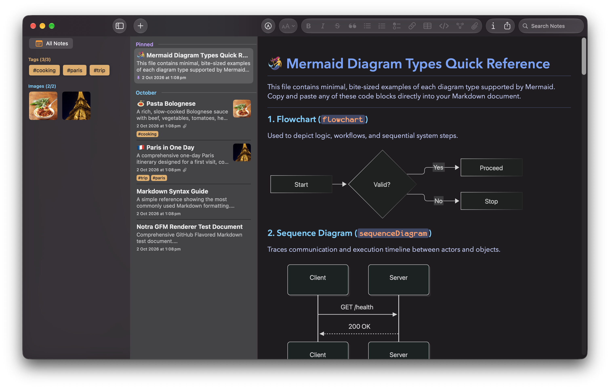
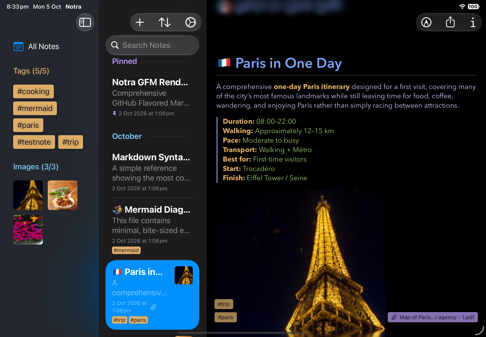
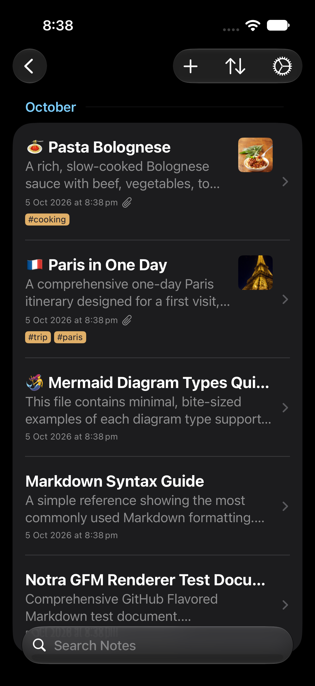

GitHub-Flavoured Markdown
Write with GFM tables, task lists, strikethrough and automatic links, alongside familiar Markdown formatting.
| Idea | Status || --- | --- || **Ready** | [x] |
A quieter place for your ideas
A private Markdown workspace for Mac, iPhone and iPad. Write naturally, keep your files portable, and never trade ownership for convenience.



Made for ideas that move
A focused Markdown workspace with powerful tools for the way you work.
Write with GFM tables, task lists, strikethrough and automatic links, alongside familiar Markdown formatting.
Turn Mermaid code blocks into diagrams in preview and PDF export. The source stays editable in your Markdown.
Search, tags and pinned notes help you find the right idea in a growing library.
Keep Markdown, attachments and images together in files you can access and move.
Use local storage or sync through your own iCloud storage in the App Store edition.
Native experiences for Mac, iPhone and iPad, designed around each device.
Choose a theme and syntax highlighting to suit your writing and reading.
Import Markdown files on Mac and export polished PDFs when a note is ready to share.
A better default
Notra is designed around files you can see, move and keep. There is no Notra-hosted notebook quietly holding your life together.
No account required
Open Notra and start writing. No profile to create before your first note.
No advertising or behavioural tracking
Your notes are for you, not for a feed, an ad network or a data broker.
Open, portable content
Markdown and TextBundle-based files stay useful beyond any one app.
A familiar place, everywhere
A native workspace for Mac, iPhone and iPad.
Available for
Notra is an open-source project. Explore the code, contribute to its development, or build it yourself.
A simple way to support the work
Buy Notra once and use it without another monthly bill. Your purchase helps support thoughtful, continued development.
Keep your thoughts close
Notra is available for Mac, iPhone and iPad. One purchase. No subscription.